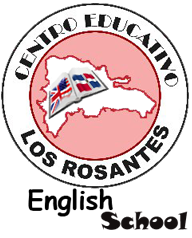

Hogar del Niño´s mission is to provide underprivileged children with
their basic needs and give them the opportunity, through education, to
be a productive adult and with this break the cycle of poverty in their
surroundings.
At Hogar del Niño we are making a difference in the lives of the children in La Romana and its surrounding areas, providing them with the tools to make a better future for them and the community.
- ESCULA DE IDIOMAS
- 
HELLO,
REMEMBER OUR NEXT CAFE DE LA LECHE
IN THE HOUSE OF ISABEL PURCELL
GOLF VILLA # 203, CASA DE CAMPO
FRIDAY, APRIL 1, 2011
CONTRIBUTION: Milk, formula and cereal
MEET NEW PEOPLE, BRING FRIENDS AND HAVE FUN!
OFFICE PBO 8095238901 / 8095563181
CREATED IN SEPT OF 2001, THE PURPOSE IS TO COLLECT FORMULAS, CEREAL AND MILK FOR CHILDREN IN SALA CUNA, THERE ARE OVER 200 BABIES FROM 45 DAYS T... leer mas. - PERFIL DE NUESTROS DOCENTES
HELLO,
REMEMBER OUR NEXT CAFE DE LA LECHE
IN THE HOUSE OF JEANETTE MARTINEZ LIMA
VISTA CHAVON # 20, CASA DE CAMPO
FRIDAY, MARCH 4, 2011
CONTRIBUTION: Milk, formula and cereal
MEET NEW PEOPLE, BRING FRIENDS AND HAVE FUN!
OFFICE PBO 8095238901 / 8095563181
CREATED IN SEPT OF 2001, THE PURPOSE IS TO COLLECT FORMULAS, CEREAL AND MILK FOR CHILDREN IN SALA CUNA, THERE ARE OVER 200 BAB... leer mas.